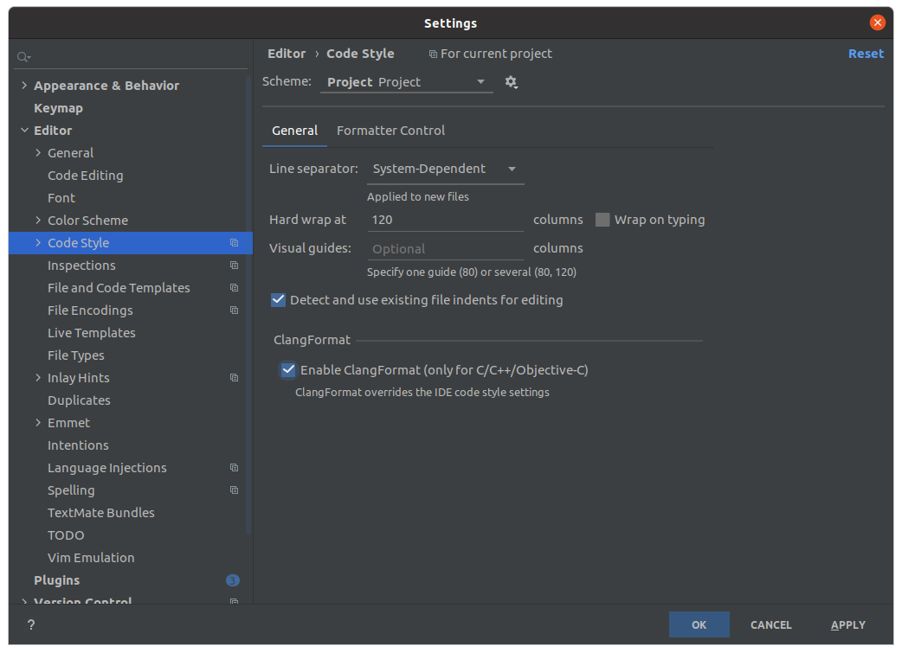

About course
Данный курс читается студентам кафедры КТ в университете ИТМО.
Лектор — Иван Сорокин
Преподаватели практики и контакты:
- Лев Довжик @Dogzik
- Нурсан Валеев @Tindarid
- Павел Безбородов @hazzus
- Захар Коваль @StarOrpheus
- Денис Воркожоков @lejabq
- Игнат Лоскутов @loskutov
С++
- 2021 draft - TBD (markdown) — описание весеннего курса (2 семестр)
Organization
- Discord & Telegram Chat — можно получить у преподавателей (анонсы, вопросы, сдача экзамена, проведение практик, обсуждения)
- Баллы — текущая успеваемость
- Запись на сдачу дз и практик - TBD
Lectures
- Twitch — лекции & разборы практик
- Youtube — старые записи (2020)
- cpp-notes — конспекты, ведущиеся руками студентов
Баллы
Если у вас есть вопросы касательно таблицы с баллами (например, вы себя не нашли) пишите Паше.
Подробнее о балльно-рейтинговой системе:
- Оценка это ваши баллы за практическую часть + домашние задания + экзамен
- Без успешной сдачи экзамена вы не можете получить оценку, то есть:
auto score = practice + hw + exam;
auto grade = exam > 0 ? score : std::min(score, 59);
// grade -> de.ifmo
- Разбалловка
- Практика - 30 баллов. 3-4 небольшие задачи, которые вам расскажут преподаватели на отдельной паре, напишут какую-то часть кода, ответят на вопросы. Выполняются обычно за 2-5 дней, сдача практик после дедлайна невозможна.
- Домашние задания - 50 баллов. 4 задачи, которые будут выдавать в течение семестра. Для каждой будет отдельный дедлайн, за просрочку сдачи которого будет штраф.
- Экзамен - 30 баллов (минимум - 10). Состоит из практической и теоретической части. В практической вы за несколько часов пишете задание, которое оценит преподаватель, а в теоретическом - отвечаете на вопросы по курсу.
- Итого 110 баллов, 10 из которых для вас --- буферная зона, благодаря экзамену можно получить оценку чуть выше, а оценки по баллам такие же как в ЦДО.
- Баллы за ДЗ считаются по формуле \( R = S \cdot B \cdot (0.6 + \frac{0.4}{1 + 3 \cdot d}) \), где
- \( B \) --- максимальный балл за задачу
- \( S \) --- ваша оценка за задачу
- \( d \) --- кол-во дней прошедших после дедлайна до вашей посылки
- Оценки за ДЗ. Для простоты переведены в символьную систему
+--- Задание выполнено = 1+---- Есть недочеты = 0.8-+--- Много недочетов = 0.6---- Плохо = 0
- Штрафы так же распространяются на правки после дедлайна.
- Сдать ДЗ с первого раза скорее всего не получится и это нормально. Мы все тут ещё учимся.
- Проверка занимает достаточно ненулевое время. Тот факт, что вы сдали до дедлайна, не означает, что вы успеете и исправить до него. Чаще всего чем ближе дедлайн тем больше время проверки в силу увеличивающейся очереди посылок
IDE
Вы можете использовать IDE по вкусу для выполнения практик/домашних заданий.
Но чтобы ваш код был в определенном стиле и при написании кода вы быстро увидели опечатки/минорные баги - вам предоставлены .clang-tidy и .clang-format файлы в репозиториях.
В этом разделе описаны этапы конфигурации некоторых IDE (рекомендуется Clion).
CLion
Установка
На официальном сайте (ссылка в header-e - кликабельна) можно найти информацию об установке через Toolbox (если вы используете другие IDE от Jetbrains) или об установке на Windows.
На Ubuntu рекомендуется следующий процесс установки (чтобы можно было обновлять среду разработки через пакетный менеджер):
$ sudo apt install snap
$ sudo snap install clion --classic
clang-tidy
Clion имеет встроенный clang-tidy, но вы можете указать внешний, если он есть на вашей системе.
Нужно убедиться, что вы поставили галочку на
Prefer .clang-tidy files over IDE settingsчтобы использовать .clang-tidy курса.
Path: Settings / Preferences | Editor | Inspections - C/C++, General, Clang-Tidy
clang-format
Clion имеет встроенный (альтернативный) clang-format, но вы можете указать внешний, если он есть на вашей системе.
Нужно убедиться, что вы поставили галочку на
Enable ClangFormat (only for C/C++/Objective-Cчтобы использовать .clang-format курса.
Path: Settings / Preferences | Editor | Code Style - ClangFormat

Либо другой, более быстрый вариант. В нижней панели экрана, поставить соотвествующую галочку.

QtCreator
Установка
Есть мануал на официальном сайте (ссылка в header-e - кликабельна). Здесь можно найти offline установщики Qt (в который собственно и входит Creator) для Windows и Linux/MacOS.
На Ubuntu рекомендуется следующий процесс установки (чтобы можно было обновлять среду разработки через пакетный менеджер):
$ sudo apt install qtcreator
clang-tidy
QtCreator имеет встроенный clang-tidy, но вы можете указать внешний, если он есть на вашей системе.
Чтобы использовать .clang-tidy курса, к сожалению, нужно будет копипастнуть наш файлик в Edit checks as string (смотрите конец инструкции в header - e)
До настроек clang-tidy можно добраться через Tools -> Options -> Analyzer -> Diagnostic Configuration

Там нужно будет создать копию и нажать Edit checks as string, куда вставить содержимое нашего файлика.

clang-format
Для установки автоматического форматирования кода в QtCreator нужен плагин Beautifier. О том как его установить можно почитать по ссылке.
Рекомендуем поставить галочку на
Enable auto format on file save
После перезапуска QtCreator идем в Tools -> Options -> Beautifier -> ClangFormat. Если у вас не стоит clang-format, его нужно поставить, в Ubuntu это sudo apt install clang-format. Далее в Options в Use predefinde styles выбираем опцию File вместо LLVM
Практики
Здесь перечислены описания практик и ссылки на Github / GithubClassroom
Формат практики объявляется преподавателями.
Краткая инструкция по работе с Github
- Форкаете соотвествующий репозиторий
- Пишите код, проходите тесты, пушите в свой
master - Создаете PR из своей ветки вида
into CPP-KT:master from YOURNAME:master - Пишите проверяющему/добавляете его в ревьюверы, проходите проверки, исправляете до закрытия вашего PR с лейблом
Accepted.
Краткая инструкция по работе с GithubClassroom
- После перехода в classroom у вас создатся приватный репозиторий со стартовым кодом, тестами, конфигурациями и т.д.
- Вы можете коммитить в любую ветку кроме ветки
feedback. Она создаётся автоматически вместе с PR изmasterв неё. - Никаких форспушей в
masterпосле первой проверки, если иное не оговорено с преподавателем. Это ломает историю внутри PR. - После того как вы выполните ДЗ вы отправляете его на проверку с помощью соотвествующей формы (в папке на GoogleDrive). Если это ваша первая попытка - то выбирайте режим сдача, иначе - правки. В качестве ссылки на PR присылайте ссылку на тот самый автоматически созданный PR
master -> feedback. - Далее заявка автоматически попадёт в таблицу и вы сможете наблюдать за её статусом.
Список практик
TBD
Домашние задания
В рамках курса вам будет предложено около 4 различных заданий. В большинстве случаев сдача происходит с помощью GitHub.Classroom
Инструкция по работе
Настройка репозитория с ДЗ
- После перехода в classroom у вас создастся приватный репозиторий со стартовым кодом, тестами, конфигурациями и т.д.
- При каждом клоне вашего репозитория вам необходимо добавлять базовый (из которого был создан ваш) с помощью команды:
$ git remode add upstream <link-to-base-repo>
- Далее после первого клона (вообще, а не на какой-то конкретной машине) нужно инициализировать правильно ветки командой:
$ ./init-repo.sh
- С этих пор вы можете коммитить в любые ветки кроме
feedback, которая будет соответствоватьupstream/master
Подтягивание новых тестов и других изменений
Иногда нам приходится править какие-то проблемы во всех репозиториях или добавлять новые тесты по тем или иным причинам. Чтобы массово подтягивать эти изменения и не ломать PR (речь о нём ниже) мы подготовили для вас специальный скрипт.
ВНИМАНИЕ: перед его работой вам необходимо сохранить куда-то незакомиченные изменения, например, с помощью git-stash.
Чтобы подтянуть сами изменения достаточно выполнить следующую команду из корня репозитория:
$ ./update-repo.sh
Сдача
Для сдачи решения вы делаете следующее:
- Переносите решение в ветку
master, если не делали сразу всё в ней - Пушите
masterна удалённый репозиторий - Если у вас ещё нет PR
master -> feedback, то создаёте его - Присылаете с помощью формы нам на проверку ссылку на этот PR. В случае первой сдачи выбирайте режим
сдача, иначе -правки - Дальше ждёте проверку и при необходимости внести правки после неё повторяете всё снова
Asm
Задание
По адресу лежит пример двух программ на ассемблере:
- Программа
hello.asm— это программа выводящая строку "Hello, world". В ней подробно прокомментирована каждая строчка. - Программа
add.asm— это программа, которая выполняет сложение двух длинных чисел.
Вам необходимо разобраться в этих примерах и написать на их основе программы выполняющие вычитание и умножение беззнаковых длинных чисел.
Обратите внимание, что приведенные примеры заточены на конкретную архитектуру процессора (x86-64), конкретный ассемблер (NASM) и операционную систему (Linux).
Разрешается писать программы под другие архитектуры, ассемблеры и операционные системы, при этом вам придется самим переписать код на нужную архитектуру и разобраться как сделать ввод-вывод. Если вы будете делать программу под архитектуру отличную от x86_64 или i386, предварительно согласуйте это со мной.
Запуск примеров
Для того, чтобы запустить примеры на понадобится любой 64-битный дистрибутив Linux. Чтобы проверить битность вашего дистрибутива, можно исполнить команду:
$ uname -m
Если команда выводит x86_64, то система 64-битная, если i386 или i686 — 32-битная.
Для работы нам потребуются следующие инструменты:
- NASM — собственно сам ассемблер
- GNU Binutils — пакет программ для работы с бинарными файлами от проекта GNU (нам из них понадобится только ld)
- GCC — коллекция компиляторов проекта GNU (нам из них понадобится только драйвер gcc)
- GDB — отладчик
- Qt Creator — IDE
- CMake — система сборки
- Git — система контроля версий
- Чтобы установить эти программы (в Debian-based дистрибутивах) необходимо исполнить команду:
$ sudo apt-get install nasm binutils gcc gdb qtcreator cmake git
Чтобы взять исходный код примеров необходимо исполнить команду:
$ git clone https://github.com/sorokin/cpp-course.git
После этого в текущем каталоге появится каталог cpp-course. Заходим внутрь:
$ cd cpp-course/helloasm
Проверяем, что всё компилируется:
$ cmake .
$ make
В текущем каталоге должны появится файлы hello и add. Проверяем, что всё работает:
$ ./hello
Hello, world!
$ ./add
10000000000000000000000000000000000000
100000000000000000000000000000000000000000000000000000000000000
100000000000000000000000010000000000000000000000000000000000000
Чтобы редактировать код в IDE, необходимо запустить Qt Creator:
$ qtcreator
И попытаться открыть файл helloasm/CMakeLists.txt.
Возможные проблемы
Поскольку мы не создаем корректных стековых фреймов и не генерим dwarf-символов для отладки, то отладчик не может корректно показать стек вызовов (видно на скриншоте), по этой же причине иногда не работает Step Over (F10).
- Решение 1: Можно создавать стековый фрейм руками, но это придется делать в каждой функции.
- Решение 2: Можно использовать CFI-директивы для указания того, как нужно раскручивать стек, но NASM их не поддерживает, поэтому в качестве ассемблера придется использовать GNU as.
Нажатие Step Into (F11)/Step Over(F10), когда программа не запущена приводит к тому, что программа запускается и отрабатывает до выхода, вместо того, чтобы остановиться на первой строчке. Дело в том, что QtCreator ставит breakpoint на main и запускает программу, чтобы она брейкнулась в main. Но поскольку в наших программа функции main нет, программа просто отрабатывает до конца.
- Решение 1: Поставить breakpoint в начале программы.
- Решение 2: Создать метку main. Её можно добавить там же, где и _start:
global _start
global main
_start:
main: